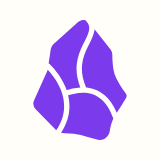
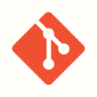

Obsidian — claims & judgment notes
repo docs/ADR — product truthchat is draft · claims need evidence · outcomes decide what survives

Obsidian — claims & judgment notes
repo docs/ADR — product truthUseful observations become evidence-backed claims. · learn → next claim (in the vault — not every outcome graduates)